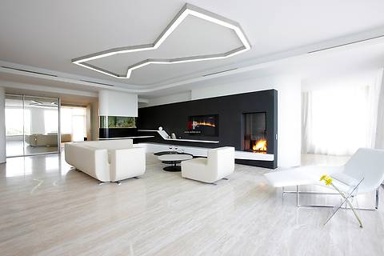
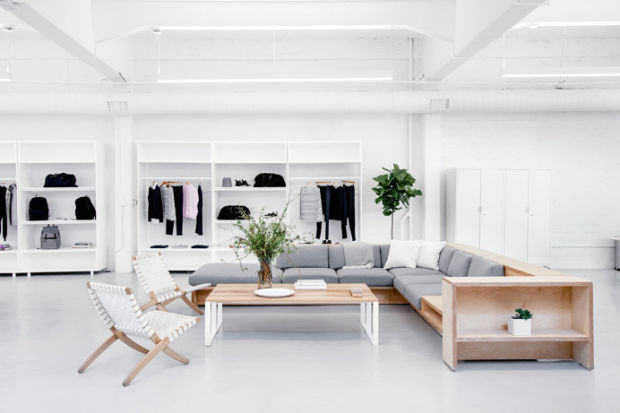
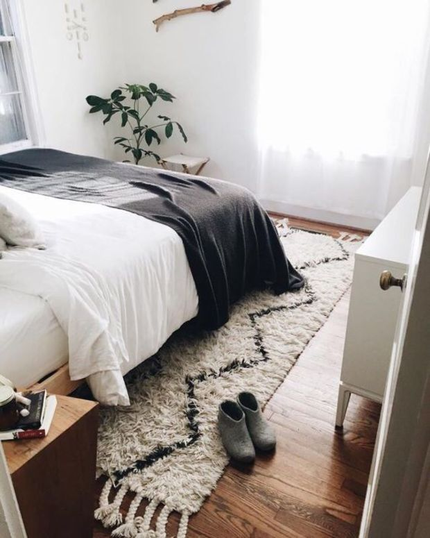
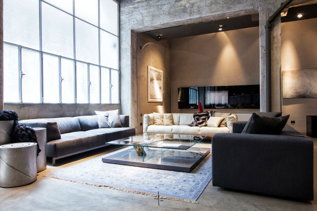
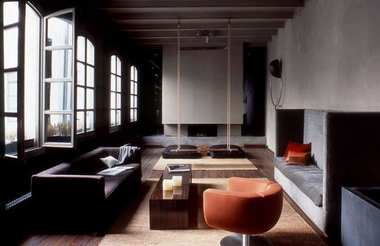
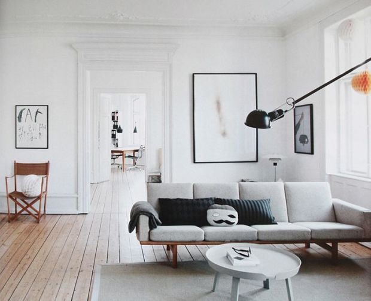
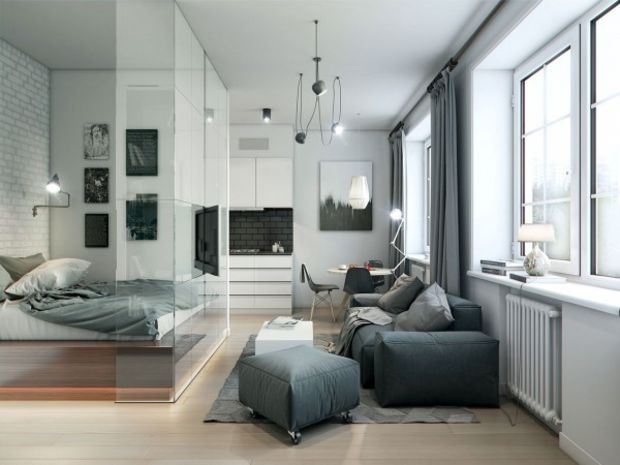
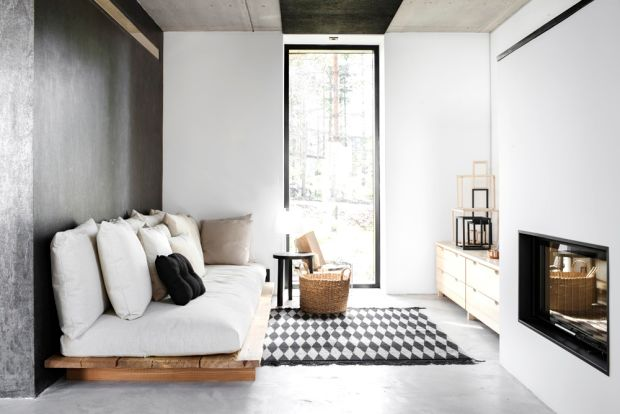
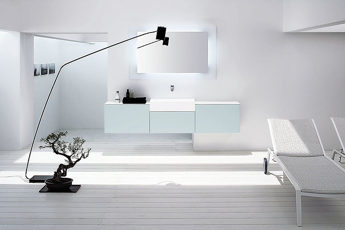

Минимализм подразумевает максимум пространства в помещении
любых габаритов. Добиться этого можно за счет перепланировки
и разрушения не несущих перегородок. Например,
объединяют несколько смежных помещений: кухню и гостиную
или прихожую и гостиную и т.д. Также визуально сделать комнаты
более просторными позволят панорамные окна – остекление от пола до потолка.
Функциональные зоны в таких интерьерах выделяют с помощью
многоуровневого освещения, предметов мебели или отделочных материалов.



Цветовая гамма – спокойная, нейтральная.
В большинстве случаев доминирует светлая палитра,
прослеживается игра полутонов. Белый цвет может
поддерживаться серым, коричневым или черным. В интерьере
придерживаются однотонного цветового решения. Допускается
не более 2-3 оттенков на одно помещение. Дополняют
сдержанную палитру зеркальный блеск и естественные оттенки
натуральных материалов: дерева, металла, кирпича и др.
Или же используется два контрастных тона. Очень
эффектно смотрится сочетание светло-серого и красного.



Лаконичность и комфорт – характерные особенности минимализма.
Поэтому предпочтение отдают трансформируемой, встроенной
и многофункциональной мебели. Предметы должны быть
правильной геометрической формы и с плоской поверхностью.
Мягкая мебель тоже отличается простыми формами и линиями.
Также предусматривается минимальное количество или
даже почти полное отсутствие декора и аксессуаров.